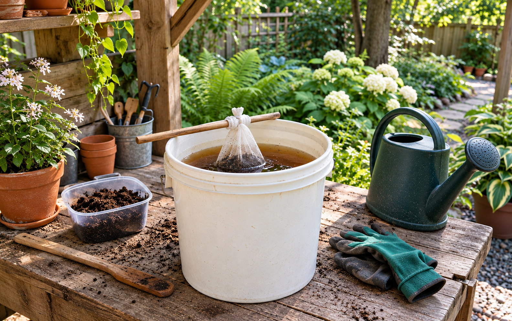
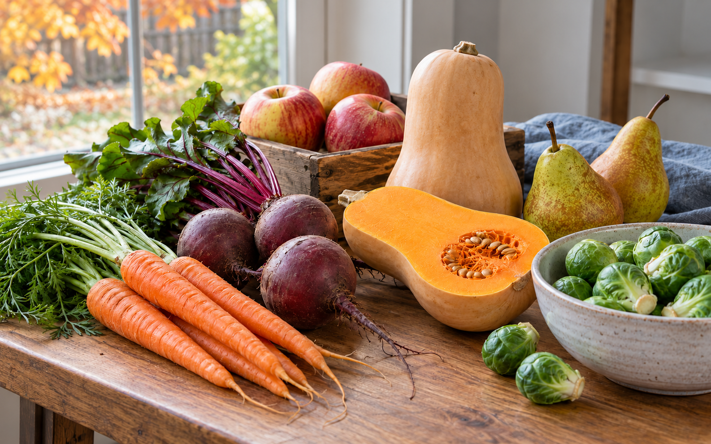
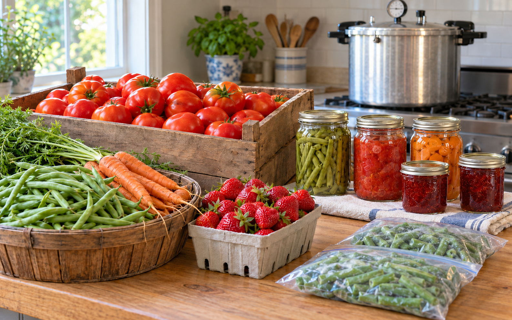

Make Your Own Compost Tea
Explore a small-batch method, realistic nutrient expectations, and careful use on non-edible ornamental plants.
Read guideIdeas for a better everyday
Explore practical, carefully sourced guides for your home, garden and everyday life. Choose a topic or search for a place to start.

Explore a small-batch method, realistic nutrient expectations, and careful use on non-edible ornamental plants.
Read guide
Explore Ontario produce, plan flexible meals, store food thoughtfully, and reduce everyday household food waste.
Read guide
Make the most of a garden harvest with freezing, tested jams and pickles, safe canning, and thoughtful storage.
Read guide
Assess your roof, shade and electricity use, understand Ontario options, and prepare to compare written solar quotes.
Read guideTry a broader search, such as “garden”, “home”, or “energy”.